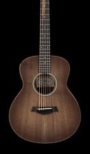
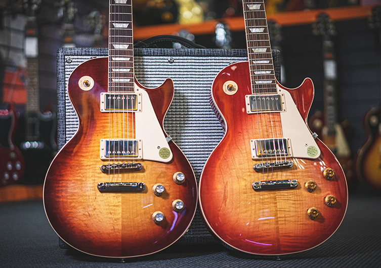
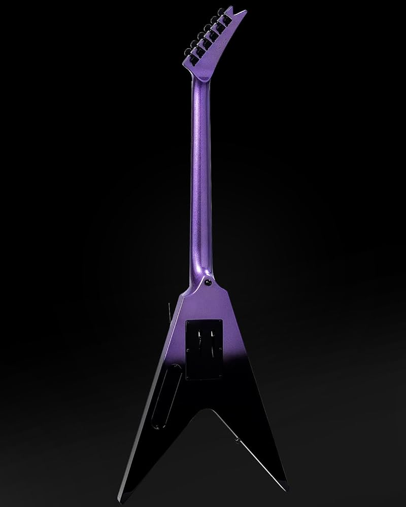
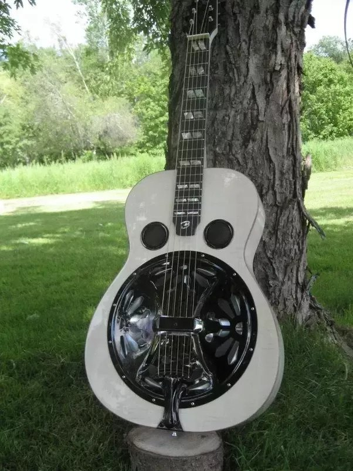

Related articles
The classical guitar, also called modern classical guitar, is a member of the guitar family used in classical music and other
styles. An acoustic wooden string instrument with strings made of gut or nylon, it is a precursor of the modern steel-string
acoustic and electric guitars.
See More

An acoustic guitar is a musical instrument in the string family. When a string is plucked, its vibration is transmitted from the bridge, resonating throughout the top of the guitar. It is also
transmitted to the side and back of the instrument, resonating through the air in the body
See More

The style and sound of rock music has branched out into many subgenres since the 60s, but the essence of rock guitar has remained the same. Whether
classic or modern, the power chords, pentatonic licks, and distorted tones are still at the core of any rock guitarist's sound.
See More
Related articles
Jazz guitar may refer to either a type of electric guitar or a guitar playing style in jazz, using
electric amplification to increase the volume of acoustic guitars.In the early 1930s,
jazz musicians sought to amplify their sound to be heard . Most jazz guitarists have performed on an
electrically amplified guitars.
See More

Heavy metal guitar (or simply metal guitar) is the use of highly-amplified electric guitar in heavy metal.
Heavy metal guitar playing is rooted in the guitar playing styles developed in 1960s-era blues rock and psychedelic
rock, and folk harmonic traditions and it uses a massive sound.
See More

During the early 1920’s, the so-called first generation of country music had finally emerged on the world’s music scene.
Mostly focused around the city of Atlanta, Georgia, the era epitomized the state of the working class in the US at the time,easily finding its way among the vast number of listeners.
See More